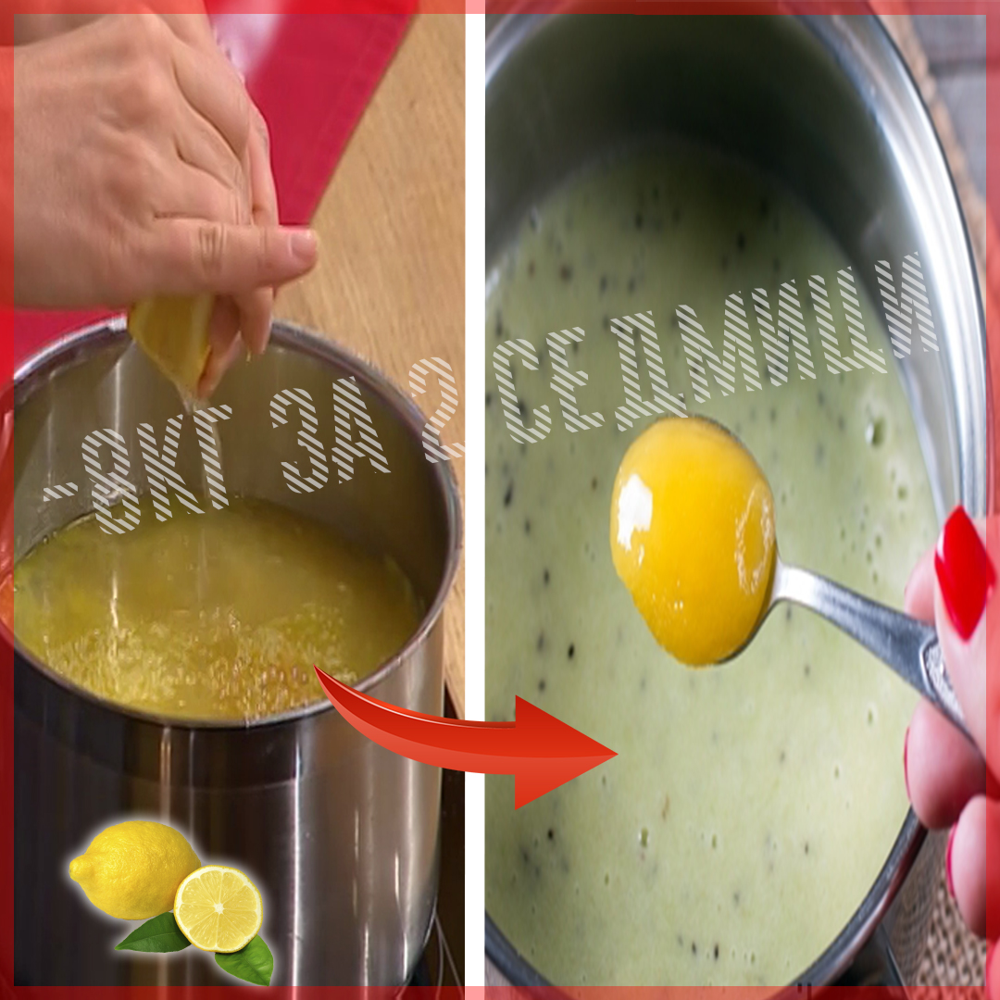

Diet lemon soup from Anita Lutsenko
Light, diet soup with juice and lemon zest, cooked on vegetable broth. Nourishing, useful and not at all caloric, because the author of this soup - Anita Lutsenko, a true pro in the proper diet. Preparation time Portion cooking time 20-25 minutes 30-35 minutes 3-4 portions Ingredients Rice - 6 tbsp. Lentils - 6 tbsp. Lemon - 1 pc. Kurkuma - 1/3 part l. Onion - 1 pc. Garlic - 2 teeth Broth - 1.5 l Kinza, four twigs. Salt - ½ hour. Olive oil - 1 tbsp. Water - 1.5 l Parsley root - 1 piece. Celery root - 0,5 pcs. Parsnip root - 0,5 pcs. Preparation method Purify and shred the onions. Purify and shred the two garlic teeth. In a pot with a thick bottom, stew the chopped onions with garlic for five minutes. Add olive oil and turmeric to the pot and continue to stew. After a minute add lentils and rice and mix well. Pour one and a half litres of vegetable stock. Bring it to the boil. Then turn down the heat and continue to cook for another 25 minutes until the dish is ready. In a pot of soup, squeeze out the lemon juice and add the grated lemon peel. Salt to taste. How to serve Pour soup into tureens and decorate with a slice of lemon and a sprig of coriander. Buy a book with 1001 recipes